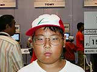
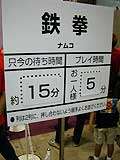
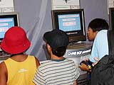
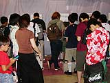

| #7 ゲームボーイアドバンス ライセンシータイトル体験コーナーレポート その６ |
ゲームボーイアドバンス ライセンシータイトル体験コーナーレポート その６ page1 ・・・ page2 |
| ● ZOIDS SAGA トミー |
|
 子どもたちに大人気のキャラクター、ゾイド。アニメやおもちゃですっかりおなじみです。ゾイドＲＰＧの第３弾が早くもアドバンスに登場しました。プレイヤーは謎の敵に支配された小国の皇子になり、ゾイドを操って敵をうちやぶります。主人公はゲームオリジナルのキャラクターですが、バンやビットなど、アニメのキャラクターたちも登場します。 大好きなゾイドを自分で操れるとあって、体験コーナーは男の子たちでいっぱい。ゾイドのプラモデルをたくさん持っているという斉藤薫くん（12歳）は、「画像がプラモのゾイドとよく似ていて、よくできていると思いました」とコメントしてくれました。ゲームの中でも自分でゾイドを改造できるので、すごく楽しめたみたいですよ。 |
| ● 鉄拳（仮称） ナムコ |
|
 なんと、ナムコのナンバーワン格闘ゲームがアドバンス用ソフトとして登場！ オリジナルの楽しさはそのままに、手軽にどこでもバトルできるようになりました。もちろん、通信対戦にも対応していますよ。新要素もさまざまに追加され、『鉄拳』ファンならこたえられない内容となっています。 アドバンス版ではＡＢボタンを中心にした操作体系になっているので、体験プレイのお客さんも闘いやすかったみたいです。若い格闘ファン風のお兄さん、小・中学生の男の子たちと、体験コーナーは大盛況。みなさん、結構上手にプレイされていますね。ゲームセンターできたえているのかな？ 華麗なワザも次々披露されています。短い時間ながら、全員が熱いバトルを楽しんでいました。 |
| ● 激闘！カーバトラーＧＯ！！ ビクターインタラクティブ |
|
 車での激烈なバトルが楽しめるゲームです。物語を楽しむ「ＲＰＧモード」と「対戦モード」があり、さまざまな年齢層のかたがエンジョイできます。なにより楽しいのは、車を改造できること。武器（攻撃アイテム）をガンガン装備して、カゲキな車を作ってしまえるのです。 体験コーナーでは実際に対戦プレイが遊べます。知らない人同士で戦いながら、悔しがったり喜んだり、子どもたちが思いきり楽しんでいました。ゲームを通じてコミュニケーションがとれるのがいいですね。「気が小さくて逃げ回っている子が案外勝てたりするんですよ」とスタッフ。逃げながら攻撃するのがコツみたいですね。６歳以上のお子さんなら、ほぼ問題なく遊べるそうです。 |
| ● ザ・キング・オブ・ファイターズ GBA版（仮称） マーベラスエンターテイメント |
|
 人気格闘ゲーム『ザ・キング・オブ・ファイターズ』が、オリジナルストーリーで登場。『ザ・キング・オブ・ファイターズ'97』の後日談という形で、お話が展開されていきます。男っぽいキャラクターたちに思いっきり入れこんでプレイできそう。派手な演出は、携帯ゲームになってもしっかり健在ですよ。 列に並んでいた７歳の男の子は、ゲームセンターでよく格闘ゲームをプレイしているそう。新しい『ザ・キング・オブ・ファイターズ』の画面に興味シンシンです。「格闘ゲームが好き。今日は勝てるかどうか、やってみないとわかんないな」と、順番が来るのを待ち望んでいました。 |
ゲームボーイアドバンス ライセンシータイトル体験コーナーレポート その６ page1 ・・・ page2 |
| 前のレポートへ | 次のレポートへ |
|
|